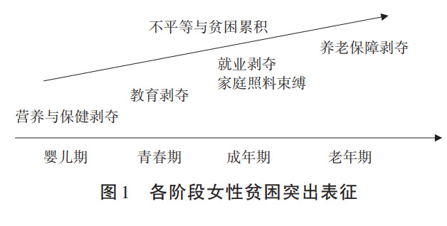

热点2023年4月|我要往前走，往前走，释放所有的能力和潜力
原创
Hurrah
煎茶小组
2023-05-27 15:20:40
0
1
90后女孩从辍学打工到香港读博，
冲破桎梏走向宽广之路
“现在的生活很美好，但我不会停下，我要往前走，往前走，释放所有的能力和潜力。”
2023年3月，小小在网上分享自己就职和求学的经历引发关注。
“2007年，山西某单位餐厅服务员；
2008年，北京丰台电话销售；
2009年，北京通州一网吧收银员；
2010年，北京通州电话销售；
2011年，北京通州小推车摊煎饼、卖玉米......”
全文链接：
https://weibo.com/5327831786/MCQF2cBYM
0
2
从性别视角重新审视青年就业议题
当下正值“金三银四”春招季，大学生就业问题正进入关键阶段。近来，多地发起专门针对女大学生就业的扶持计划及行动，让人们聚焦女大学生群体，从性别视角重新审视青年就业议题。
大学生整体就业形势严峻，其中女大学生就业难度更加突出。
此前，有官方统计数据显示，2020年，我国高等教育在校生中，女研究生、女普通本专科、成人本专科的占比均稳定超过50%。
另有统计显示，2022年高校毕业生中，女大学生的比重也超过50%。
这些都意味着，应届大学生求职大军中，女性人数“略胜一筹”。
然而，持续在教育中保持性别优势的女性，在求职时却不得不面对显性和隐形的性别歧视。
一松一紧之下，是略带冷感的女大学生求职现实。
全文链接：
https://weibo.com/5327831786/MDBWf71wH
0
3
中国首位听障人士律师
谭婷，我国第一位通过法律职业资格考试的听障人士。2020年来，她义务为听障人士群体提供法律咨询服务，并定期在短视频平台推出普法短视频和直播讲解。她说：“我的使命，就是把正义的声音带到无声的角落里”
谭婷曾因为听力问题不能出庭而苦恼自己作为律师的意义。
她向她的老师，中国第一位手语律师，唐帅求助。
唐帅回答谭婷：
“出庭只有几十分钟，但普法却是一辈子的工作。
普法的意义远大于出庭。
你就是星星之火，既可以为聋人群体普及法律知识，又可以带动更多人为聋人提供法律服务。
”
谭婷受到老师的启发开始通过直播和短视频平台进行普法宣传和法律援助。
越来越多的聋人找到谭婷。
现在，谭婷手机里的微信好友人数已经将近4000人，全是找她咨询的聋人。
而她帮助过的人数，远大于这个数字。
全文链接：
https://weibo.com/5327831786/MBZV2q5bg
0
4
19岁女孩整形医院抽脂后3天死亡，为什么女性更加容易容貌焦虑
我们不反对女人对自我形象的关注。但我们崇尚自然之美、健康之美、人性之美以及自由之美。如果把商业文化和传统文化合谋后刻意给定的女性美的标准作为自己极端的生活方式和人生价值去追求，那么，女性在获得涂脂抹粉和改变身体的自由后，就有可能失去人格的独立和尊严，更深的沦为男性的附庸和玩物。
因为自古女性身体美就不是单纯的个体行为，而是一种内涵丰富的文化，铭刻着男性中心文化的深刻烙印。
而在这种文化底下，女性美的历史充满着性别歧视和压迫的斑斑泪痕。
全文链接：
https://weibo.com/5327831786/MB1eKo2in
0
5
加班文化为啥屡禁不止，北上广深青年加班人数性别比
从青年男女加班总体数据来看，男女比例旗鼓相当，且女性略多于男性占51.1%。
从四地分布看，仅深圳的男性加班族比例略高于女性，除此，北京、上海、广州的女性加班比例都要高于男性。
全文链接：
https://weibo.com/5327831786/MAINrn6Zy
0
6
你知道吗，除了月经还有季经
才知道除了月经还有季经
，月经禁忌的本质是以性别权力关系来制定的一系列社会秩序。
为了维护父系社会体系，性禁忌逐渐延伸到对女性作为其所属物的生理禁忌，其中最为常见的是月经禁忌。
月经禁忌暗含性禁忌乃至整个社会结构中无形的男性权力，约束着女性的生理和行为。
从内容上看，月经禁忌包含行为和语言上的禁忌。
从社会结构中看，月经禁忌所建构的意义，在区分两性生理差异的基础上，利用象征权力形成了一种象征性的暴力，以实现基于性别统治的社会秩序。
全文链接：
https://weibo.com/5327831786/MAJHBbgOJ
0
7
女性贫困在世界范围具有普遍性，在发展中国家尤为凸
显
自20世纪中叶以来，“贫困女性化”话题开始受到国际社会的关注，性别因素被纳入贫困研究范畴。阿玛蒂亚·森（AmartyaSen）在推动性别视角纳入贫困研究方面起到巨大作用，提出了除关注女性福利待遇外，更需将注意力从“福利主义”转移到对女性主体地位和能动性的强调。
美国学者戴安娜·皮尔斯（DianaPearce）指出了贫困人口中女性占比和女户主贫困家庭占比不断增多的事实，开创了基于性别视角研究贫困的新领域，深化了人类对贫困的认知。

全文链接：
https://weibo.com/5327831786/MChRH4bhi
0
8
专家称生育率降低不只因为房价高，女性自由与生育角色的伦理冲突
女性主体意识，是指女性作为独立个体，认识到其作为“人〞所应有的权利和价值的意识。但女性主体意识的觉醒是在近代以来才发生的事情，在漫长的岁月里，女性被男性所定义，母系氏族被父系氏族所替代是女性在人类历史上的重大失败，此后父（夫）权制成为家庭的基本模式。古今中外，莫不如此。
诚如黑格尔所说的男女在家庭的不同伦理责任，“家庭作为法律上的人格，在对他人的关系上，以身为家长的男子为代表。此外，男子主要是出外谋生，关心家庭需要，以及支配和管理家庭财产”。女性“在家庭中获得她的实体性的规定”，亦即中国文化中所说的“男主外、女主内”。女性和家庭以及子女教育紧密联系在一起，女性的价值场域在于家庭内部而非社会公共生活，女性无法选择自己的命运，只能顺从封建伦常，承担生育的伦理义务，并将其作为自身价值的证明。
全文链接：https://weibo.com/5327831786/MD3LouQDl
0
9
求张继科事件视频当心触法，要学会尊重每一个活生生的人
“由于网络的即时性、互动性，影响范围广，因而网络隐私侵权的扩散力强，危害性大，侵权后果往往比较严重，而且还会出现极化和磁化的现象。”
色情报复就是这样一种借由网络发展，使得侵犯私密性隐私内容行为危害性陡增的社会现象。色情报复问题在我国非常普遍，无论是明星等公众人物或是普通百姓都不能幸免于难。
涉及普通人的色情报复问题也极为普遍，且表现形式多种多样，有通过微信、QQ等社交软件向被害人的亲属、同事、朋友等熟悉被害人的特定人传播私密的性隐私内容，有通过微博等公共媒体平台公开散布、传播被害人私密的性隐私内容，也有以散布、传播被害人私密的性隐私内容进行牟利，甚至有以性隐私内容为要挟向被害人所要钱财或要求被害人实施特定行为等。此外色情报复问题也容易衍生出其他犯罪行为，如敲诈勒索、强奸、强制猥亵侮辱、传播淫秽物品及寻衅滋事等犯罪行为。
全文链接：https://weibo.com/5327831786/MAsAT5dJd
10
第四期中国妇女社会地位调查结果
第四期中国妇女社会地位调查结果（
十年一次调查，第四期调查时点2020.7.1）
一、女性在经济社会发展中“半边天”力量进一步彰显
近十年来，女性广泛参与经济社会发展，就业领域进一步拓展，和男性一道比肩走进我国经济社会发展的舞台中央。
女性在业比例保持较高水平
18-64岁在业者中，女性占43.5%，男性占56.5%。近七成女性处于在业状态，城镇和农村女性在业比例分别为66.3%、73.2%。
女性就业结构进一步优化
女性在第一、二、三产业就业的比例分别为28.8%、17.1%和54.1%，其中在第一产业就业的比例比2010年降低16.5个百分点，在第二、三产业就业的比例分别比2010年提高2.6和13.9个百分点。
农村女性非农就业比例大幅提高
农村在业女性中，非农就业比例为39.5%，比2010年提高15.4个百分点。37.8%的农村女性有外出务工经历，返乡女性从事非农劳动的比例为52.6%。
全文链接：https://weibo.com/5327831786/MACLme0i6
END